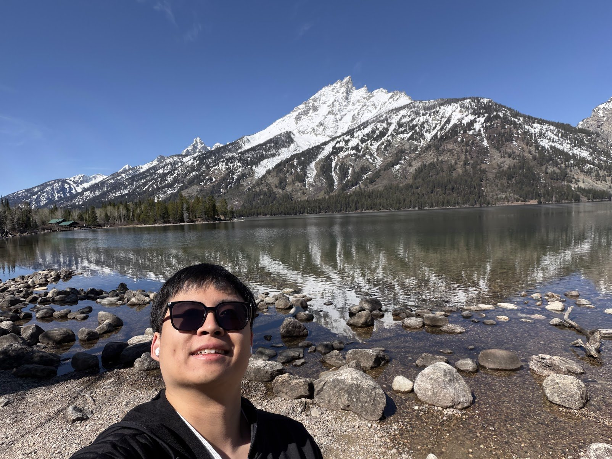

NOTE 001 · A NEW BEGINNING
A more personal space
This website used to introduce my work. I’m giving it a different purpose: a place for the person behind it.
Read the first noteA LITTLE SPACE OF MY OWN
Based in San Jose. A place for thoughts, little discoveries, and things I’d like to remember along the way.
A little about me01 / ABOUT
My name is Szu-Yu Lee, and I also go by Leon. I’m currently living in San Jose. Welcome—this is a place to get to know me a little beyond a job title.
I’m currently a software engineer working in ads. Here, I’m making room for life beyond work, too. A question I’m thinking about, a small discovery, or something I’m still figuring out can belong here too.
I’m starting with a journal in English. There’s no grand plan for it yet—just a place to collect a few words and see where they lead.
02 / PLACES
Some places have been home; others, a chance to explore. A few places I’ve been, close to home and further afield.

03 / JOURNAL
NOTE 001 · A NEW BEGINNING
This website used to introduce my work. I’m giving it a different purpose: a place for the person behind it.
Read the first note04 / NOW
Updated
Right now, I’m turning this website into something more personal. That starts with a simpler design, fewer credentials, and more room to write.
The first note is about that change. A more recent photo now greets you here. Next comes deciding what I want to share in this little space.
05 / KEEP IN TOUCH
In San Jose or somewhere further away, I’m happy to meet new people. Let’s talk about life, software, travel, or whatever’s on your mind.
Book a coffee chat30 minutes, Saturdays from 2–5 p.m. Pacific through December 17, 2026 (except October 31). Join me on Google Meet, or for coffee within about a 10-minute drive of Cannery Park in San Jose. Choose your preference when booking; we’ll confirm an in-person spot together.